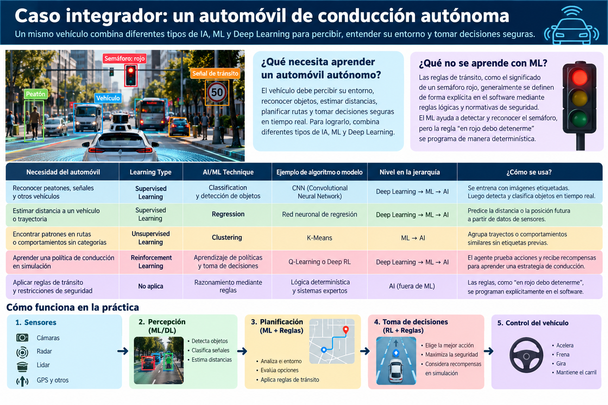

Un automóvil autónomo: varios modelos, una sola solución
¿Qué funciones pueden combinarse dentro del mismo vehículo?

Conectamos los conceptos
| Necesidad | Learning Type | AI/ML Technique | Ejemplo | Nivel más específico |
|---|---|---|---|---|
| Reconocer peatones y semáforos | Supervised | Classification / detección de objetos | Red neuronal para visión | DL → ML → AI |
| Estimar una distancia | Supervised | Regression | Red de regresión | DL → ML → AI |
| Agrupar patrones de conducción sin etiquetas | Unsupervised | Clustering | K-Means | ML → AI |
| Aprender decisiones en simulación | Reinforcement | Aprender una política de acciones | Deep Reinforcement Learning | DL → ML → AI |
| Aplicar normas de tránsito explícitas | No aplica | Reglas / lógica | Motor de reglas | AI basada en reglas* |
Ejemplos didácticos: no representan la arquitectura obligatoria de todos los automóviles autónomos. *Un motor de reglas puede formar parte de un sistema de IA simbólica; una simple validación programada no es, por sí sola, necesariamente IA.